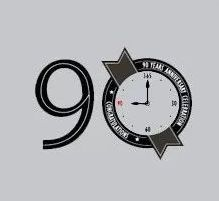

乘坐飞机旅行对现代人来说已是越来越平常的选择，但面对空难，正确的自救措施必须要知道。
空难发生时，会有一个“黑色10分钟”，而所谓的“黑色10分钟”，是指绝大多数空难都发生在飞机起飞阶段的三分钟，与着陆阶段的七分钟。
但事故一旦发生，留给机上旅客的逃生时间并没有七分钟、三分钟这么长。

而失事后的一分半可能是逃生的“黄金”时间，也就是所谓的“黄金90秒”。
而在飞机失事前，一般会有一些预兆：如机身颠簸；飞机急剧下降；舱内出现烟雾；舱外出现黑烟；发动机关闭，一直伴随着的飞机轰鸣声消失；在高空飞行时一声巨响，舱内尘土飞扬，这是机身破裂舱内突然减压等。
澳大利亚教授盖里尔在评估了2000名幸存者的座位后发现，幸存者在逃生时要走的平均距离约为7排座位，所以，可以选择在这个范围内就座。同时还要数一下距离最近的两个逃生口有多少排座位，以便在黑暗中也能找到出口。因为距离你最近的逃生口不一定可用。同时最好靠近通道。
一旦发生事故，往往会出现飞机坠地时产生巨大冲击力、飞机燃烧甚至产生有毒烟雾等致命情况，因此，如何躲开这些致命因素，是逃生与自救的关键。而在事故中，这八个细节和逃生动作，或许能够在某种程度上保护你。